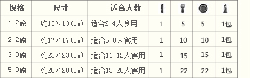

如何订购
关于配送范围：
⊙ 目前我们提供广州市天河，海珠，荔湾，越秀，番禺（南沙、榄核除外）、白云（嘉禾望岗以北除外）、黄埔区配送服务，萝岗区与花都区暂时没有开放送货服务。（详细见配送范围）
⊙ 请提前五小时订购，当日产品需在下午2点前预订；部分产品需提前24小时订购，如5磅以上的定制蛋糕。
⊙ 如需要修改蛋糕品类或送货时间，送货时间将根据修改内容延后七小时完成。
温馨提示：请在会员账户下订购，如果没有您收到订单确认短信，请务必致电400—998—2928，以免耽误您的订单！
预定方式
1、打电话给我们：400-998-2928
2、网上下单请登陆：www.sweetmagic.com.cn
3、微博私信给我们：@sweetmagic果吉多
4、加入微信服务帐号下单，微信服务号：果吉多蛋糕
5、根据自己的需求选择合适的规格及款式。
果吉多产品的规格及适用人数：免费配套餐具

1磅=454g 纯手工制作，尺寸作为参考，以重量为准，允许有3%左右的误差。
特别提示：5磅以上的蛋糕，请与客服人员联系，我们将派专人为您跟踪服务，订购电话：400-998-2928
网上下单购买步骤 小提示：如果您在19点之后下单，送货时间最早为次日14点。
第一步：已注册会员请输入会员名及密码进行会员登录。如果您还不是会员，可先免费注册成为会员，享受果吉多网站更多优惠及服务。
第二步：
通过产品页面，选择您喜欢的商品；确认重量及购买数量后，点击“购买”按钮，将商品放入购物车。如需购买其它商品，请选择“继续购物”，将您喜欢的商全部放入购物车后，点击“我要购买”按钮，进入下一步，如该商品有3款其它磅数可选，请选择将您需要的磅数放入购物车。
*在购物的全过程，您随时可点击页面右上方的“购物篮”来查看您的购物现状。
第三步：如果您是首次在果吉多网站购物，请按照提示步骤，准确提交订货人与收货人信息；如果您在果吉多网站有购物履历，系统会自动调取您最后一次购物时所留的信息；选择配送地区、配送方式、支付方式及送货时间要求，填写完毕后“提交订单”。 *需要特别说明的问题可填写在订货留言中。
再次提示：请在会员账户下订购，如果没有您收到订单确认短信，请务必致电400-998-2928，以免耽误您的订单！